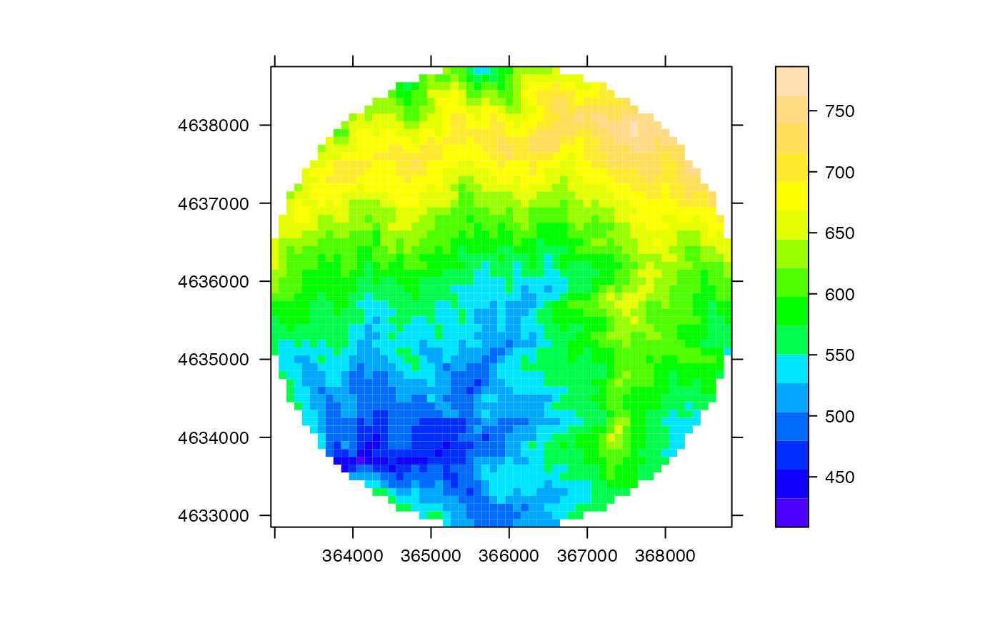
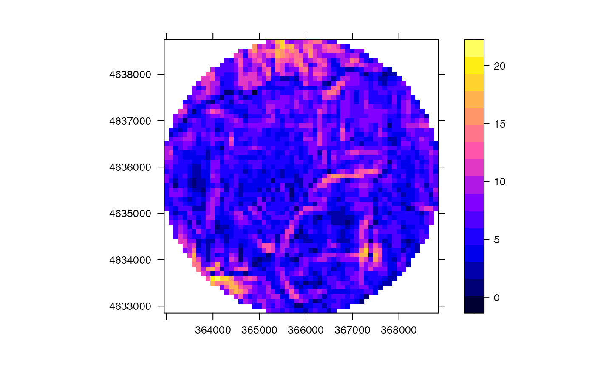
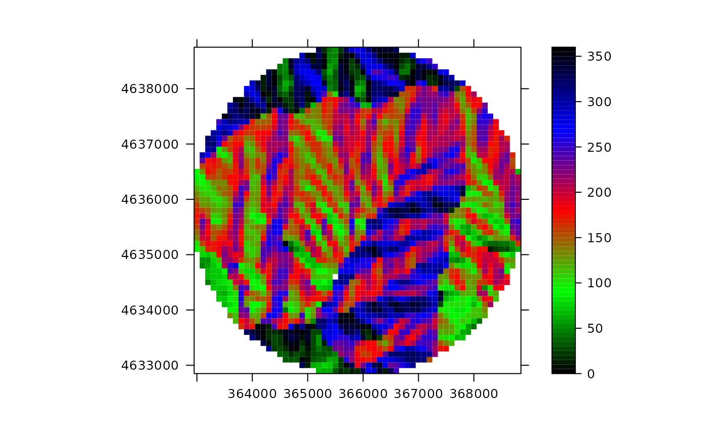

Creates a 'SpatialPixelsTopography'
SpatialPixelsTopography.Rd![[Deprecated]](figures/lifecycle-deprecated.svg)
Function SpatialPixelsTopography creates an object of class
SpatialPixelsTopography-class containing topographic variables
for a set of points.
SpatialPixelsTopography(
points,
elevation,
slope,
aspect,
tolerance = sqrt(.Machine$double.eps),
proj4string = CRS(as.character(NA)),
round = NULL,
grid = NULL
)Arguments
- points
An object of class
SpatialPoints-classor a numeric matrix of coordinates.- elevation
Elevation values (in m) of the points.
- slope
Slope values (in degrees) of the points.
- aspect
Aspect values (in degrees from North) of the points.
- tolerance
Precision up to which extent points should be exactly on a grid.
- proj4string
Object of class
CRSin the first form only used when points does not inherit fromSpatial.- round
default
NULL, otherwise a value passed to as the digits argument toroundfor setting cell size.- grid
Grid topology using an object of class
GridTopology; a value ofNULLimplies that this will be derived from the point coordinates.
Value
Function SpatialPixelsTopography returns an object
'SpatialPixelsTopography-class'.
See also
Examples
data(examplegridtopography)
#Creates spatial topography pixels as a subset of points in the grid
spt = as(examplegridtopography,"SpatialPointsTopography")
cc = spt@coords
center = 5160
d = sqrt((cc[,1]-cc[center,1])^2+(cc[,2]-cc[center,2])^2)
p = which(d<3000) #Select points at maximum distance of 3km from center
spxt = SpatialPixelsTopography(spt[p], spt$elevation[p],
spt$slope[p],
spt$aspect[p])
#> Warning: `SpatialPixelsTopography()` was deprecated in meteoland 2.0.0.
#> ℹ Spatial_*_Topography classes are soft deprecated. User topography now can be
#> provided as sf or stars objects
#Alternatively, use coercing and subsetting (drop = TRUE causes grid to be recalculated)
spxt = as(examplegridtopography, "SpatialPixelsTopography")[p, drop=TRUE]
#Display data
spplot(spxt, variable="elevation", scales=list(draw=TRUE))

spplot(spxt, variable="slope", scales=list(draw=TRUE))

spplot(spxt, variable="aspect", scales=list(draw=TRUE))
